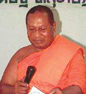
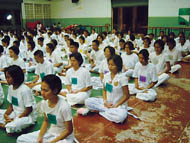

| ศูนย์พัฒนาคุณธรรมเปิดหลักสูตรพัฒนาจิต
-------------------------- มุมมองของ นสพ.คม ชัด ลึก ------------------------------ |
|
 พระเทพพิพัฒนาภรณ์ ประธานศูนย์พัฒนาคุณธรรม จ.สุราษฎร์ธานี ศูนย์พัฒนาคุณธรรมภาคใต้ (เจ้าคณะจังหวัดสุราษฎร์ธานี) กล่าวว่า เยาวชน คือ อนาคตของชาติ เยาวชนที่มีสุขภาพทั้งทางด้านร่างกายที่เข้มแข็ง แข็งแรงและมีจิตใจเปี่ยมด้วยคุณธรรม จริยธรรม ย่อมนำมาซึ่งการพัฒนาที่ยังยืน และนำมาซึ่งความสงบสุขของสังคม แต่ในปัจจุบัน ปัญหาทางด้านจิตใจที่เสื่อมจากคุณธรรม จริยธรรม เป็นปัญหาเร่งด่วนที่ผู้เกี่ยวข้องทุกฝ่ายต้องร่วมมือแก้ไข เพราะหากช้าไป ปัญหานี้นับวันจะทวีความรุนแรง ถ้าไม่มีมาตรการแก้ไขที่ดี จะเป็นผลเสียต่อความมั่นคงของชาติ จึงเกิดศูนย์พัฒนาคุณธรรม จ.สุราษฎร์ธานี ขึ้น อย่างไรก็ตาม ถึงแม้ว่ากระทรวงศึกษาธิการจะกำหนดให้มีการเรียนวิชาพุทธศาสนาในโรงเรียนเป็นวิชาบังคับเลือกให้เรียน ๒ คาบต่อสัปดาห์แล้วก็ตาม แต่ปัญหาเยาวชนกับสังคมก็ยังเรื้อรังมาโดยตลอด ผลส่วนหนึ่งเกิดขึ้นจากการปลูกฝังคุณธรรมจริยธรรมในวัยเด็กไม่ดีพอ ปัจจัยบางอย่างขึ้นอยู่กับครูผู้สอน ทุกรายวิชาเราจะโยนปัญหาทั้งหมดให้ครูผู้สอนวิชาพระพุทธศาสนาเพียงฝ่ายเดียวคงไม่ได้ ปัจจัยบางอย่างขึ้นอยู่กับสิ่งแวดล้อม ครอบครัวและตัวของเด็กเอง การฝึกอบรมค่ายพุทธธรรมจึงเป็นทางหนึ่งที่จะช่วยขัดเกลาอุปนิสัยและปลูกฝังคุณธรรม จริยธรรม ให้เยาวชนที่ติดสารเสพติดกลับตัวเป็นคนดี วัตถุประสงค์
ศูนย์พัฒนาคุณธรรม จ.สุราษฎ์ธานี แนวทางการฝึกอบรมเพื่อพัฒนาคุณธรรม จริยธรรมในสถานศึกษา หลักสูตร ๑ ค่ายพุทธธรรม สำหรับนักเรียน นิสิต นักศึกษา และเยาวชนทั่วไป ระยะเวลา ๓ วัน ๒ คืน โดยคณะวิทยากรของศูนย์พัฒนาคุณธรรม จ.สุราษฎร์ธานี จัดให้มีการฝึกอบรมจำนวน ๙ หลักสูตร ได้แก่ ค่ายคุณธรรม จริยธรรม ค่ายผู้นำ ค่ายปฏิบัติธรรม ค่ายอาสาพัฒนาสังคม ค่ายคนดีศรีสังคม ค่ายเยาวชนอาสาพัฒนาฯ ค่ายฟื้นฟูและส่งเสริมคุณภาพชีวิต และโครงการอบรมเยาวชนบ้านเปลี่ยนวิถีคืนคนดีสู่สังคม พระครูวิสุทธิวุฒิคุณ หัวหน้าหน่วยอบรมพัฒนาจิต กล่าวเสริมว่า กิจกรรมปลูกฝังคุณธรรม เช่น การแสดงละครสะท้อนสังคม บทบาทสมมติ การลด ละ เลิกอบายมุข การจุดเทียนปัญญา การตักบาตรความดี และฉากสุดท้ายของชีวิตเป็นการนำเรื่องราวของชีวิตกับความตาย มานำเสนอในรูปแบบที่ต่างกัน เพื่อให้เยาวชนเกิดความสังเวชสลดใจต่อมรณกรรมของบุคคลต่างๆ ที่นำมาเสนอให้เป็นอุทาหรณ์ และให้ตระหนักถึงความสำคัญของชีวิตขณะที่มีลมหายใจอยู่นี้ สามารถทำประโยชน์ต่อตนเอง สังคม และประเทศชาติ สถานศึกษาใดมีความสนใจติดต่อสอบถามได้ที่ วัดท่าไทร ต.ท่าทองใหม่ อ.กาญจนดิษฐ์ จ.สุราษฎร์ธานี โทร.๐๘-๑๖๐๖-๐๒๔๔, ๐๘-๑๗๙๗-๔๘๔๗ หรือที่ พระมหาบุญโฮม ปริปุณฺณสีโล ฝ่ายทะเบียน - Webmaster ของศูนย์ฯ โทร. ๐๘-๑๕๖๙-๐๓๐๙ http:/www.rakdee.net อีเมล watthasai@thai.com หรือ makam216@yahoo.com
|
|
คำแนะนำ โฮมเพจนี้เหมาะสมกับความละเอียด 800 X 600 และ ควรคลิกเมนู Refresh ทุกครั้งที่เข้าชมเพื่อได้รับข้อมูลที่เป็นปัจจุบัน นำเสนอข้อมูลและดูแลระบบ โดย ศูนย์ฝึกอบรมพิมพ์ดีดและคอมพิวเตอร์วัดท่าไทร ประสานงานโดย พระมหาบุญโฮม ปริปุณฺณสีโล watthasai@thai.com หรือ makam216@yahoo.com โทร.08-1569-0309, 08-6690-5892 |